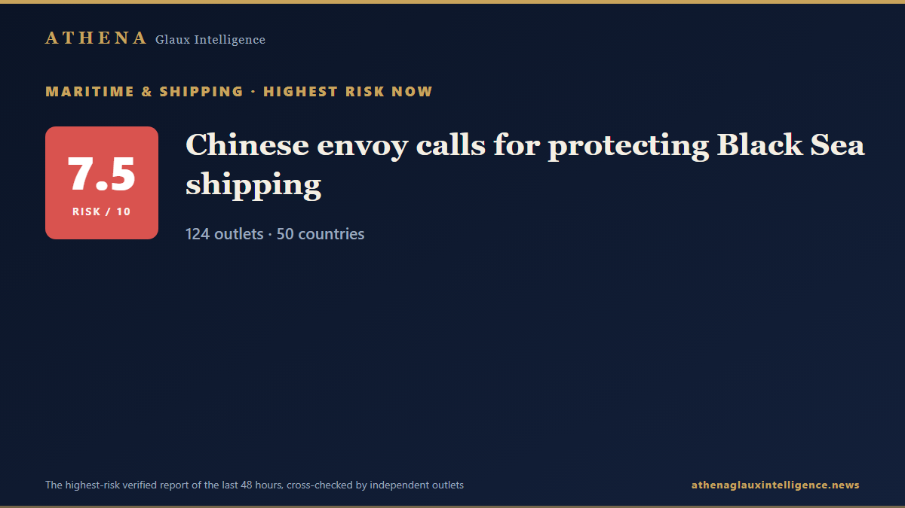
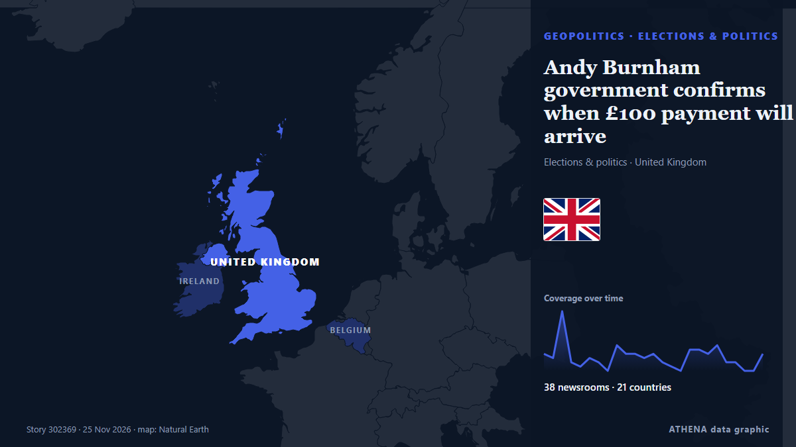

Risk 7.3Elevated
ATHENA Glaux Intelligence — Global news intelligence — every number explained
Geopolitics
All geopolitics >Highest risk now

Rising riskRisk up in the last 24 hours
Maritime & shipping
Maritime desk >Highest risk now
Risk 7.5Elevated
Chinese envoy calls for protecting Black Sea shipping
Read the evidence ›
Rising riskRisk up in the last 24 hours
Every headline, checked across countries.
ATHENA Glaux reads 744 news outlets worldwide. A story becomes a verified event only when independent outlets report it. Each event shows who was first and a risk score with its reasons.
1,469events in 24 hours
744outlets followed
44minutes between updates
Earthquake or flood near you this week?
Type your town and see the earthquakes, floods, storms and official warnings near it, with a 72-hour emergency kit checklist. Free, no sign-up, and your place stays on your device.
Reports drift in from independent outlets - when two meet on the same story, it becomes a verified event.
How ATHENA checks a story
- CollectReports arrive from independent outlets in many countries.
- MatchWhen two outlets meet on the same story, it becomes a verified event.
- ExplainEach event shows who was first, how far it spread and why the risk is what it is.
Global risk outlook
Weekly and monthly reviews: the highest-risk events, the trends by domain and region, and what to watch next.
Read the outlook ›Daily briefing
The ten most important world events of the day, the rising risks and the new events, with every number explained.
Open today's briefing ›
GeopoliticsAndy Burnham government confirms when £100 payment will arrive
New guidance issued today sets out how eligible residents will receive the support. from Liverpool Echo
6.5Importance
4.6Risk · elevated
87%Confidence
Accidents & emergencies
Turkish military helicopter crash kills 5 during training flight
Five crew members were killed Tuesday when a Turkish military helicopter crashed during a training flight in central Turkey’s Eskişehir province, Turkey’s defense ministry said. from Turkish Minute
Geopolitics
Hungarian PM says he hosted refugees from Zakarpattia Oblast
Prime Minister Péter Magyar says Hungary has provided refuge to tens of thousands of Ukrainians since Russia's full-scale invasion, including many ethnic Hungarians. from Ukrainska Pravda (English)
Sponsored
Cybernetics and Artificial Intelligence Lab Welcome to the Cybernetics and Artificial Intelligence Laboratory, established at the Department of Business Administration of the National and Kapodistrian University of Athens. The lab is headed by Professor Dimitrios Thomakos. The lab aims to do research that can be published in top venues. Our research uses tools and methods of Artificial Intelligence, and lies in the following areas: - Forecasting - Decision making - Cyber security - Finance We are always looking forward to collaborating with exceptional students!
Learn more – Cybernetics and Artificial Intelligence LabShips at the world's chokepoints now
Live AIS counts. Tap or hover a bar for the detail.
Latest reports
Cybersecurity Breach Reported At CIA And National Intelligence Director’s Office
End Western ‘irresolution’ to show Putin he can’t win in Ukraine, says Johnson
Senior member of Turkish ruling party resigns amid fund probe
Blanche Dodges Questions About Jensen Huang Investigation After His Reinstatement
Ukraine Needs at Least €115B in 2027 to Sustain War Effort, Zelensky Says
Insiders say Anthropic, OpenAI struggle to contain unreleased AI models: Axios
Central Bank launches electronic payment system to replace manual cheques
Geopolitics
Sheikh Hasina seeks to return to Bangladesh on December 16 on state carrier
Minister terms ex-PM 'fugitive terrorist', says she can only return by extradition in handcuffs, under surveillance. from Express Tribune
Technology & Cyber
Microsoft Declares ‘Code Red’ After Historic 24-Hour Outage
Internal memos show Microsoft wants future outages fixed worldwide within an hour after a November failure knocked out Outlook and Teams globally. from To Vima (English)
Energy & Environment
Burnham calls for ambition after ‘deeply disappointing’ Cop31 disagreements
The Prime Minister warned the deal on the table risked ‘taking backwards steps on climate’, which was why the UK could not support it. from Evening Standard (London)
Geopolitics, Politics & Security
More ›Wars & conflicts
2 Indians Among 11 Injured As Houthis Target Tower In Saudi's Finance Hub
The Indian embassy in Saudi Arabia also confirmed that two Indian nationals sustained injuries in the attack. from NDTV
- Diplomacy & summits
Trump says trade deal reached between the U.S. and the Philippines
- Wars & conflicts
NATO to Deploy Early-Warning Aircraft to Poland Following Russian Missile Incidents
- Wars & conflicts
Moscow accuses Estonia of hostile actions on ‘verge of triggering open war’
- Diplomacy & summits
S. Korean won climbs against U.S. dollar on foreign inflows
Economics, Finance & Markets
More ›Inflation & interest rates
Australian Dollar reclaims 0.6600 before crucial RBA inflation test
The Aussie Dollar registered modest gains against the Greenback on Tuesday, up about 0.20%, as the pair reclaimed the 0.6600 level amid US Dollar weakness following solid US data, ahead of the… from FXStreet
- Jobs & wages
Bangladesh raises garment workers’ minimum wage by 36% to ₹12,865 after weeks of protests: What we know
- Stocks, bonds & markets
Compass exit should spur London to beef up its bench
- Commodities & market stress
Oil prices exceed $92 on global commodity markets
- Inflation & interest rates
Gold edges up on bargain buying after sell-off, US inflation data awaited
Trade, Industry & Infrastructure
More ›Tariffs & export controls
Trump set to unveil new set of tariffs on India, China, EU, 13 other trade partners
Trade representative expected to unveil probe results as soon as this week, according to reports. from Anadolu Agency (English)
- Aviation, rail & road
China Southern Airlines unit to buy 50 Boeing 737-8 planes
- Aviation, rail & road
Palace denies final deal to buy 100% of US food, energy supplies
- Shipping & ports
Port of Gothenburg Invests in Electrification Infrastructure for Container Terminal
- Shipping & ports
4th Abu Dhabi Maritime Awards honours winners
Energy, Resources & Environment
More ›Climate & climate policy
Forum Chair backs Australia’s COP31 role as Albanese defends conference spending
Australian Prime Minister Anthony Albanese has defended the cost of hosting and participating in COP31, saying climate action is a matter of Australia's national interest, regional security and its… from Post-Courier (PNG)
- Energy security
“K” Line orders LPG dual-fuel VLGC pair from South Korea
- Energy security
Equinor Inks 18-Year Gas Supply Deal with Germany's VNG
- Oil & gas
TotalEnergies expands U.S. gas partnership with Continental Resources, adding 150 MMcfd by 2032
- Extreme weather & natural disasters
England logged record 5,258 heat-linked deaths this summer: health agency
Technology, AI & Cybersecurity
More ›Space & satellites
China to launch Shenzhou-24 crewed spaceship on Nov. 25
China to launch Shenzhou-24 crewed spacecraft on November 25. from CGTN (China)
- Artificial intelligence
AI consumes less water per dollar spent than almond milk or golf: Report
- Chips & computing
Op-ed: Trump’s Nvidia board intervention put a price on national security. Our adversaries will take note
- Space & satellites
Shenzhou-24 astronauts share preparation for spaceflight mission
- Chips & computing
US Blacklists Megaspeed Cloud Company Linked to Nvidia Scandal
Business, Companies & Investment
More ›Corporate strategy
ShipVet Appoints New CEO as Founder Steps Back
Marine assurance and vessel vetting company ShipVet has appointed James Stairmand as chief executive officer, effective November 2026, as founder Captain Fintan Cullen moves to a non-executive role… from Maritime Professional
- Bankruptcies & restructuring
Seatrium to Cut 2% of Singapore Workforce in Yard Shake-Up
- Bankruptcies & restructuring
Trump administration sued over removal of slavery exhibit in Philadelphia
- Corporate strategy
Utah drops charges against Kalshi after company halts operations there
- Investment & capex
German President Steinmeier to open major German-African Business Summit in Accra today
Accidents & emergencies
More ›Accidents & emergencies
Bristol City 1-1 Wrexham recap: Reaction after Cam Pring fires Robins to draw at Ashton Gate
Live updates from Ashton Gate, where Michael Skubala and Bristol City host Wrexham in the Championship (7:45pm kick-off) from Bristol Post
- Accidents & emergencies
Ras Al Khaimah bus-truck collision kills 13, injures 14
- Accidents & emergencies
Mudenda calls for year-round fight against gender-based violence beyond 16 Days of Activism
- Accidents & emergencies
Police investigating whether Titans’ Jaylen Harrell assaulted driver before Florida crash
- Accidents & emergencies
Six killed, 10 injured in Hanoi eatery blast
Three ways to read today
Start with the one that fits your timeVerified events
Ranked by how widely they are reported
- After Ensuring His Nvidia Comeback, Trump Says He May Pardon Jensen Huang184 outlets · 56 countriesRisk 4.2
- Two more oil tankers explode in Strait of Hormuz unsafe route88 outlets · 33 countriesRisk 4.9
- AI trust crisis exposes cracks in Korea's stock market75 outlets · 32 countriesRisk 3.1
- Houthi Attack on Skyscraper in Saudi Capital Wounds 11, Officials Say53 outlets · 29 countriesRisk 4.1
- Libya's Government of National Unity denies prior deal with Ukraine over Benghazi attacks49 outlets · 25 countriesRisk 6.6
Assessment Desk
Ask a question and read a reasoned assessment of a leading story, with what would prove it wrong.
Open the Assessment Desk ›Today in numbers
| 09:00 | 584 |
|---|---|
| 10:00 | 481 |
| 11:00 | 539 |
| 12:00 | 663 |
| 13:00 | 754 |
| 14:00 | 566 |
| 15:00 | 479 |
| 16:00 | 497 |
| 17:00 | 409 |
| 18:00 | 453 |
| 19:00 | 616 |
| 20:00 | 1008 |
| 21:00 | 1062 |
| 22:00 | 413 |
| 23:00 | 543 |
| 00:00 | 376 |
| 01:00 | 490 |
| 02:00 | 349 |
| 03:00 | 471 |
| 04:00 | 380 |
| 05:00 | 327 |
| 06:00 | 424 |
| 07:00 | 210 |
| 08:00 | 410 |
Risk of today's events
Geopolitics69Business34Technology & Cyber33Economy & Markets32Trade & Industry30Energy & Environment27Maritime9
Emerging signals
- Sudden surge · Active nowCourt of Arbitration for Sport
- Sudden surge · Active nowShenzhou
- Sudden surge · Active nowHuawei
- Sudden surge · Active nowSAD
- Sudden surge · Active nowKurdistan
Official warnings
- M 6.5 - Vanuatu regionM6.5 · USGS ·
- M 5.9 - 238 km SW of Yanglong, ChinaM5.9 · PAGER yellow · USGS ·
Stay informed
ATHENA Weekly Risk Picture
The week's biggest geopolitical, economic and shipping risks, cross-checked and scored.
Every Friday at 08:00 Athens time · free · in English
Subscribe freeATHENA on Telegram
News the moment it is published: breaking events at risk 6 or more, an hourly round-up, risk-tracker updates and the daily briefing at 10:00.
Free · posts in English · leave at any time
Join the channelSign-up is handled by beehiiv with double opt-in: nothing you type is sent to ATHENA, and every issue has an unsubscribe link.
Risk trackers
More ›Strait of HormuzRisk 7.410 new this week · down from 27 the week beforeRed Sea shippingRisk 6.622 new this week · down from 48 the week beforeGreece–Turkey relationsRisk 3.76 new this week · about the same as the week beforeCyprusRisk 5.013 new this week · down from 18 the week beforeSanctions on RussiaRisk 6.516 new this week · about the same as the week beforeRussia–Ukraine warRisk 7.5227 new this week · down from 269 the week beforeIsrael, Gaza & the West BankRisk 6.875 new this week · down from 90 the week beforeTaiwan StraitRisk 2.711 new this week · down from 14 the week beforeOil & gas pricesRisk 3.927 new this week · down from 39 the week beforeSuez CanalRisk 0.00 new this week · down from 3 the week beforeTurkish StraitsRisk 0.00 new this weekPanama CanalRisk 0.00 new this weekShadow fleetRisk 0.01 new this week · down from 3 the week beforeBlack Sea shippingRisk 7.52 new this week · down from 7 the week beforeCentral banks & interest ratesRisk 4.239 new this week · down from 47 the week beforeGreek economyRisk 0.89 new this week · up from 6 the week beforeEastern Mediterranean energyRisk 0.01 new this week · down from 4 the week beforeBalkansRisk 4.916 new this week · down from 24 the week beforeMediterranean migrationRisk 0.00 new this week · down from 3 the week before
Global risk outlook — week 48, 2026 (23–29 Nov) ›
Around the world
Middle East & North AfricaTrump says Hormuz oil shipments exceed prewar levels
58 events
North AmericaAfter Ensuring His Nvidia Comeback, Trump Says He May Pardon Jensen Huang
58 events
Southeast AsiaVietnam Embassy celebrates Vietnamese Culture Day in Phnom Penh
55 events
South AsiaSheikh Hasina seeks to return to Bangladesh on December 16 on state carrier
53 events
Russia & EurasiaEstonia to close border with Russia for at least six months
48 events
East AsiaS. Korean won climbs against U.S. dollar on foreign inflows
44 events
Sub-Saharan AfricaCOP31 ends in failure as countries split over fossil fuels, climate finance
40 events
Latin America & CaribbeanChina's Huawei convicted in sprawling US criminal trial over Iran business
24 events